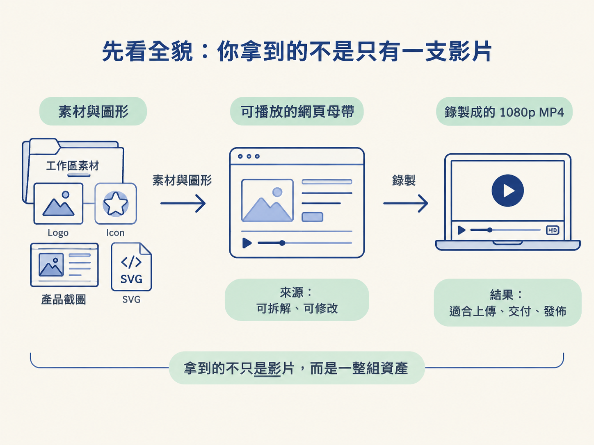
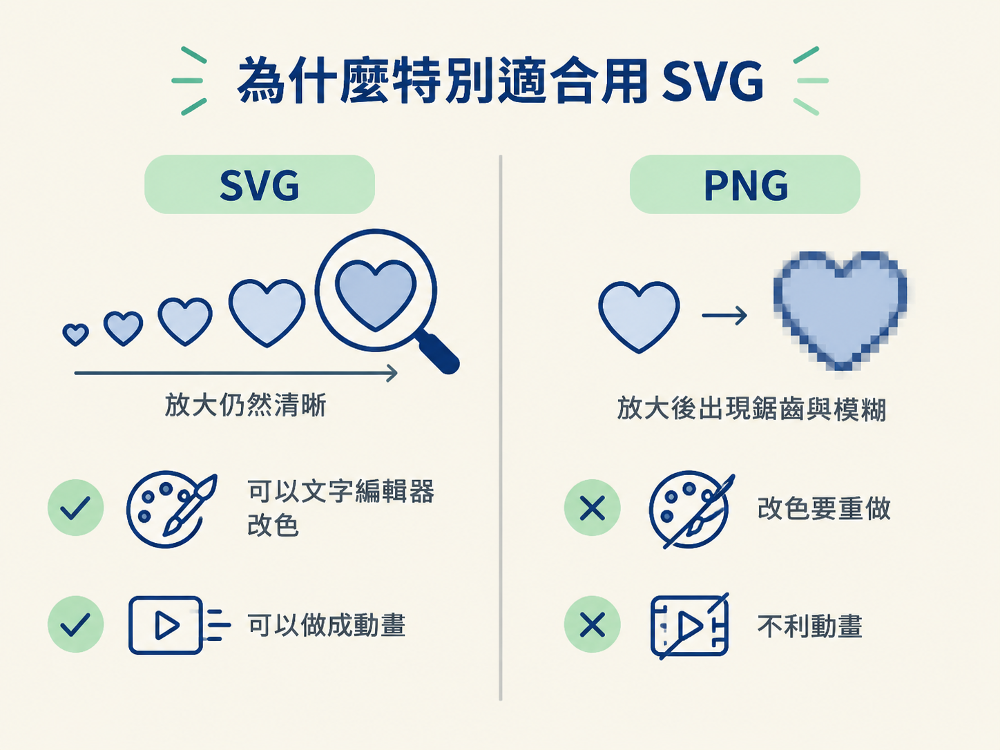
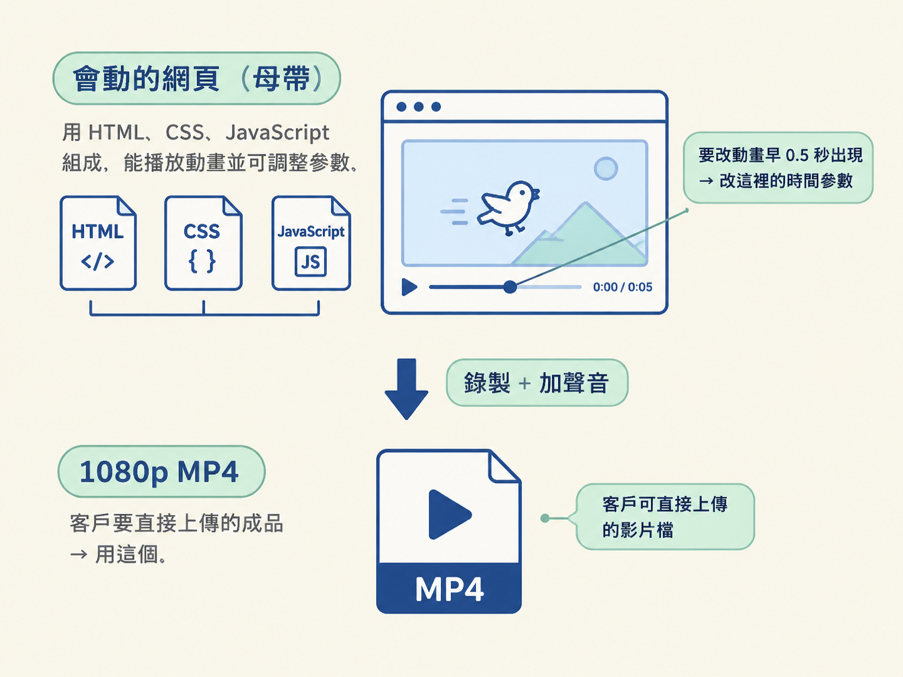

想像你請 agent 做一支產品介紹影片。工作結束後，你可能以為資料夾裡只會多出一個可以上傳的 MP4；但真正值得保留的，還有素材、SVG 圖形，以及一個能重新播放和修改的網頁。
整條 pipeline 可以先記成一條簡單的關係：
工作區素材與 agent 產生的圖形 → 可播放的網頁母帶 → 錄製成 1080p MP4
網頁是來源，MP4 是結果。前者像剪輯工程檔，能拆開來改；後者像已經封裝好的成品，適合上傳、交付與發佈。理解這個分層，你就知道每種檔案該在什麼時候使用，而不會把所有問題都丟給 MP4。

完成這一節後，你應該能列出 agent 產出的成品與素材：工作區圖片、SVG 圖形、可播放的網頁，以及 1080p MP4。你也會知道，為什麼圖像適合使用 SVG，以及「先有網頁、才有影片」代表什麼。
影片裡的圖片元素，多數不是模型憑空變出來的，而是來自你原本放在工作區裡的檔案。只要先把 logo、icon、產品截圖等素材放進專案資料夾，agent 就有東西可以使用。
agent 做的事情，是找到那張圖片，再用程式碼把它放到畫面指定的位置，並在指定的時間出現。這就像舞台工作人員先把道具放在後台，程式碼再決定哪一刻把哪件道具搬到舞台中央。
在 demo 介面裡，你甚至可以點選畫面上的元素。因為那些元素在底層都對應到工作區裡的一張圖片檔。這也表示，工作區整理得越完整、品牌素材準備得越齊全，成品就越像你的品牌，而不是一套誰都能套用的通用樣式。
如果要請 agent 產生 icon、插圖或圖表，可以特別指定使用 SVG（Scalable Vector Graphics，可縮放向量圖形）。SVG 和照片、截圖這類點陣圖不同，它不是把畫面切成固定大小的像素，而是用數學方式描述線條與形狀。
| 好處 | 實際意義 |
|---|---|
| 放大不模糊 | 向量圖用數學描述形狀，縮放到不同尺寸時，不會出現鋸齒或模糊 |
| 顏色可以手改 | 用文字編輯器打開就能修改顏色，不必回到繪圖軟體重新製作 |
| 可以拿來做動畫 | agent 能直接讓這些向量圖動起來，成為影片裡的動態元素 |
所以，SVG 的價值不只是「畫面比較清楚」。它同時是可以編輯、可以換色，也可以做成動畫的圖形。相較之下，PNG 放大容易變糊，改色通常要重新處理，拿來做動態元素也比較不方便。

工作完成時，你得到的是兩個層次的產出，而不是單獨一個影片檔。
第一層是會動的網頁。它由 HTML、CSS 和 JavaScript 組成，是一個可以播放的頁面，也是影片真正的母帶。日後想修改動畫、文字或素材時，應該回到這個檔案。
第二層是1080p MP4。它是把網頁播放的過程錄下來，再加上聲音後產生的成品，適合上傳、交付與發佈。
兩者的分工可以用一個例子看懂：如果你想讓動畫早 0.5 秒出現，要改的是母帶網頁裡的時間參數；如果客戶要一個可以直接上傳的影片檔，才是 MP4 的工作。MP4 是結果，網頁才是來源。

如果工作區裡真的沒有需要的視覺素材，還有一條備援路徑：請 agent 就地生成圖片。
其中一種做法，是啟用生成圖片的能力，例如 GPT Image 2.5 這類模型，並事先設定預算上限。實際案例中，agent 在十美元的上限內，只花了 0.34 美元生成七張 3D 渲染圖，接著再把使用者自己的設計檔案並排放進畫面。
不過，生成圖片比較適合作為備援，而不是主線。工作區裡已經有可用的品牌素材時，優先使用自己的檔案，既能維持視覺一致，也不必額外花費。
| 產出或素材 | 它是什麼 | 之後能拿它做什麼 |
|---|---|---|
| 工作區的圖片、icon、logo | 你原本放好的素材檔 | 成為影片裡的元素，維持品牌一致 |
| SVG 圖形 | agent 產生的向量圖 | 當作 icon、插圖，或可動畫的圖形 |
| 生成的圖片（需要時） | 用生成模型補出的點陣圖 | 補足工作區裡沒有的視覺素材 |
| 會動的網頁（母帶） | 由 HTML、CSS、JavaScript 組成的可播放頁面 | 作為真正可拆解、可修改的來源 |
| 1080p MP4 | 把網頁播放過程錄下來的成品 | 用於上傳、交付與發佈 |
現在可以把每種產出放回它在流程中的位置：工作區圖片是輸入素材，SVG 是可編輯又能動的圖形，HTML、CSS、JavaScript 組成可播放的母帶網頁，最後才由錄製流程產生 1080p MP4。
agent 最後交到你手上的不只是影片檔，而是一組工作區資產：你的原始素材、它產生的 SVG、需要時生成的圖片、真正可修改的母帶網頁，以及錄好的 1080p MP4。圖像指定 SVG，是為了讓它可縮放、可改色、可動畫。MP4 是結果，網頁是來源。
因此，「影片是程式碼」不只是形容影片由程式產生，而是說影片背後有一個可以重新打開、修改與播放的來源。這個觀念會和下一節接上：正因為來源是程式碼，而不是只能觀看的成品，這種做法才有機會比一次性的生成式影片更適合長期修改與重複使用。